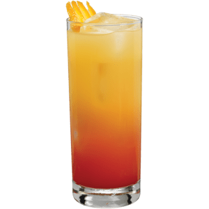

Ingredientes (para 1 persona)
- 50 ml de tequila
- 100 ml de jugo de naranja
- 15 ml de granadina
- Hielo
Preparación
- Llena un vaso con hielo.
- Agrega el tequila y el jugo de naranja.
- Vierte la granadina lentamente para crear el efecto "sunrise".